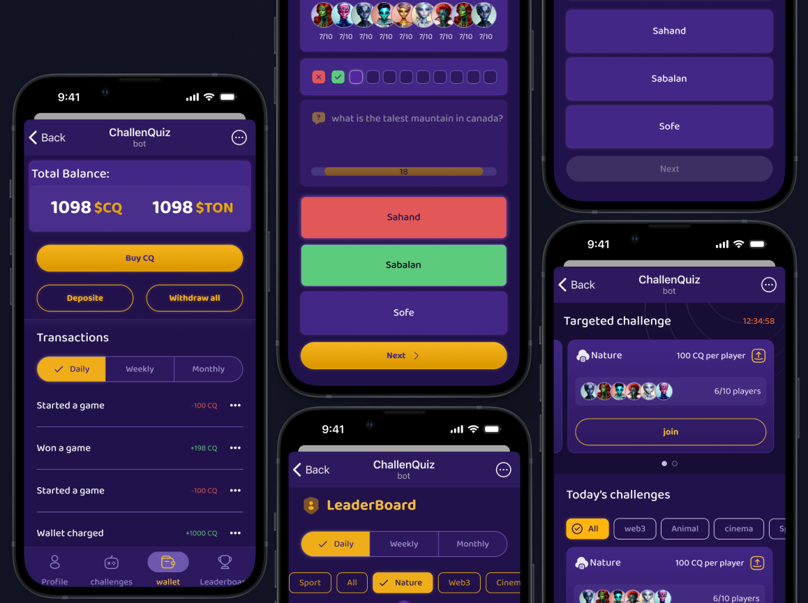
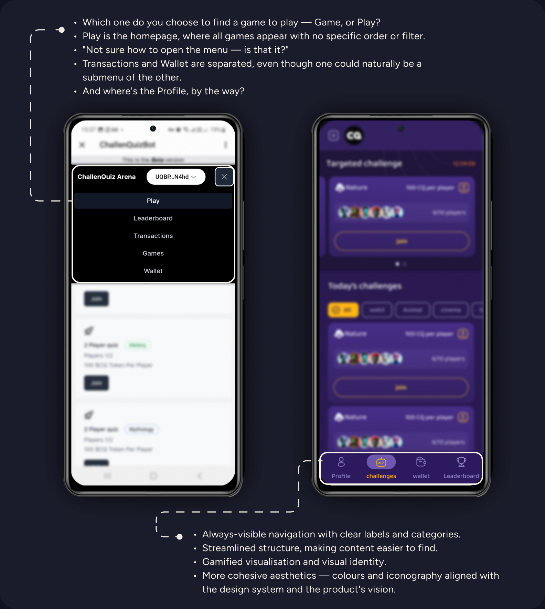
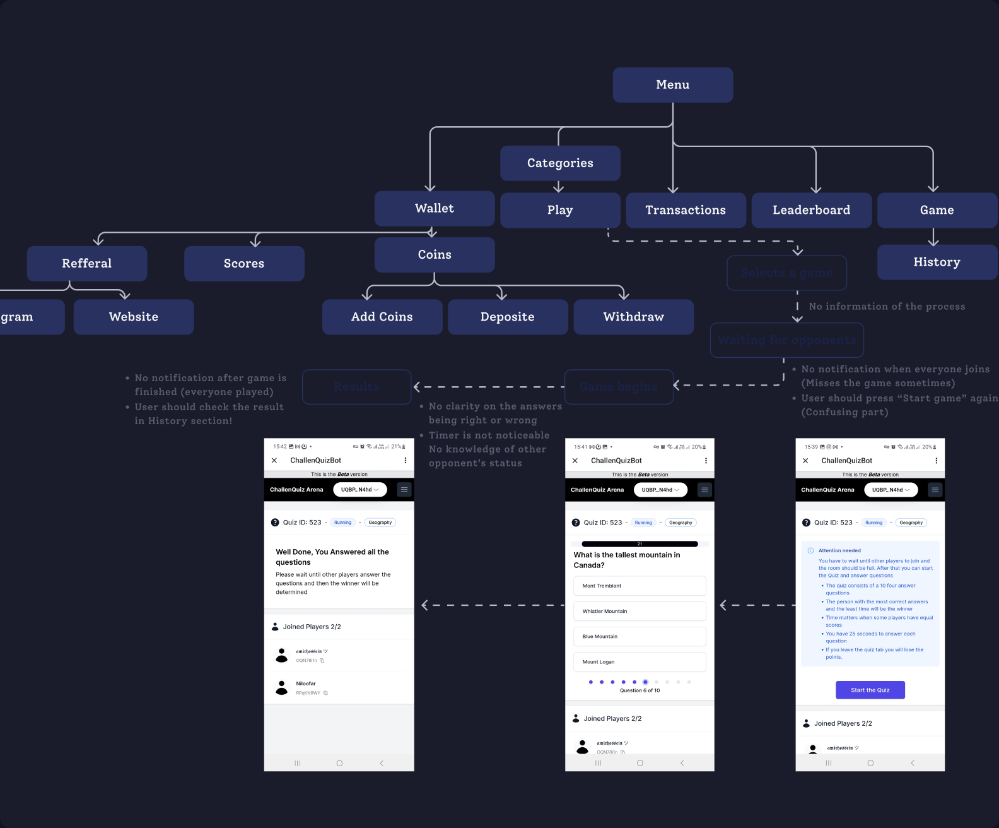
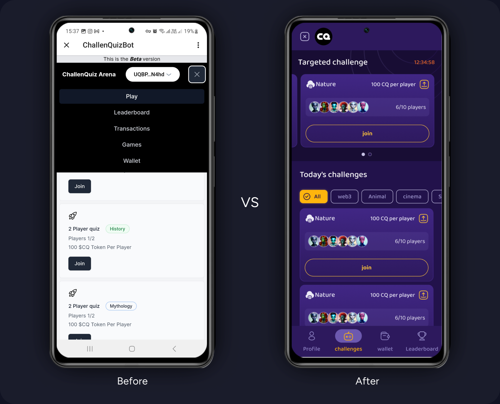
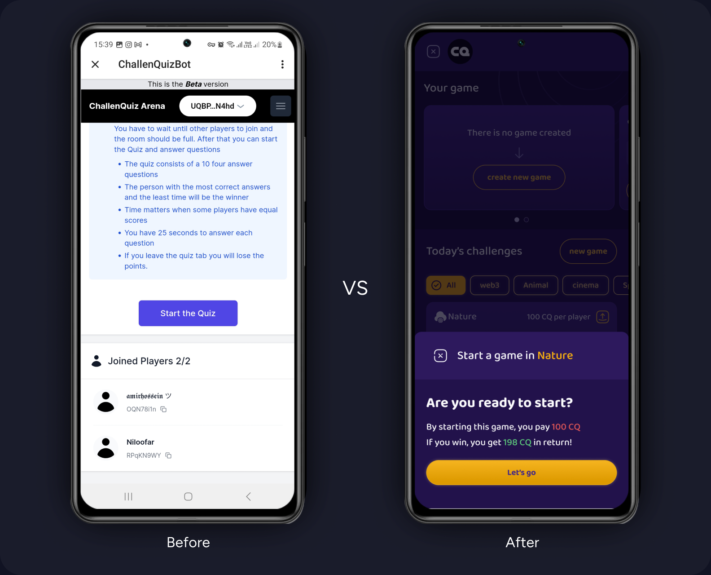
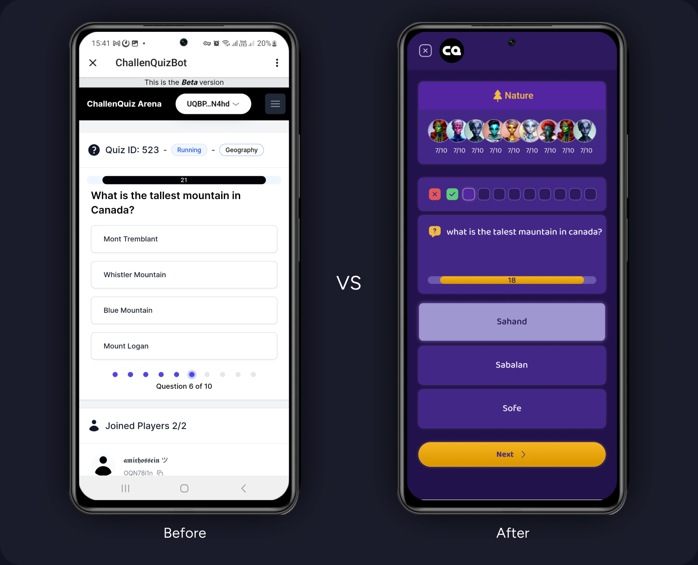
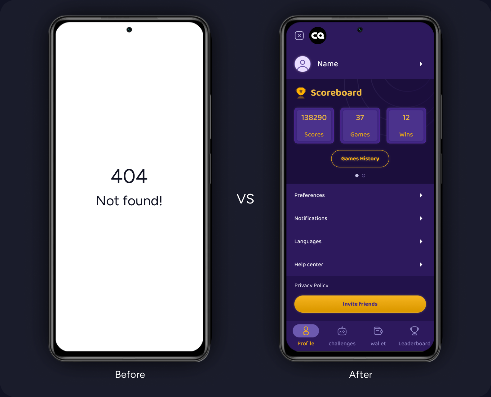
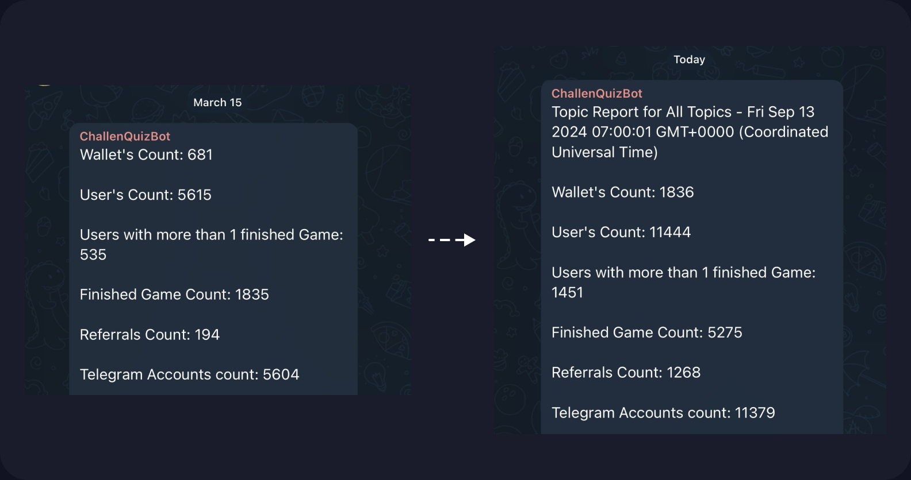

Challenquiz is a real-time trivia app built on Telegram where users compete for tokens and climb leaderboards. The concept was compelling. The product was losing users before they ever played a single game.
The problem wasn’t the idea — it was the experience. Users would select a quiz, land on a blank waiting screen with no explanation, assume the app was broken, and leave. The navigation was a buried text list. There was no onboarding, no profile, and no visual feedback during gameplay. Every friction point was invisible, which made it worse.
I redesigned the full experience alongside one other designer over six months: navigation restructure, a fixed game initiation flow with real-time player count, illustrated onboarding, colour-coded in-game feedback, and a profile system that gave users a reason to return.
During the rollout period, game completions nearly tripled and the number of users who finished at least one game grew from 535 to 1,451. The project didn’t survive long-term, but the work here led directly to my next role — the same stakeholder brought me onto ONTON.
Challenquiz is a gamified quiz app built on Telegram where users compete in real-time trivia challenges, earn tokens, and climb leaderboards. The concept was engaging — but the existing product was losing users before they ever played a game.
The legacy version had a cluttered layout, no onboarding explanation, and — most critically — a game initiation flow that silently failed users at the moment they were most motivated to play. People would select a quiz, land on a screen with no clear guidance, and quit assuming the app was broken.
My teammate and I were brought on to redesign the entire experience: navigation, onboarding, in-game interface, profiles, and the wallet and leaderboard systems.

We tested the original app version with eight real users, observing their journeys and noting where they struggled. We also gathered additional insights through a marketing agent who spoke with community members.
The findings were consistent. Three problems stood out:
1. Game initiation was invisible.
This was the biggest issue. After selecting a quiz, users needed to wait for other participants to join — but nothing on the screen explained this. Once enough players joined, the user then had to tap “Start” to begin — but that wasn’t explained either. Users assumed the app was broken and left. This was the primary drop-off point.
2. Users didn’t understand what happens during or after a game.
The flow from joining a quiz to seeing results had no visual feedback, no progress indication, and no clear state changes. Users felt lost throughout the experience.
3. Core features were buried.
The old menu was a simple vertical list (Play, Leaderboard, Transactions, Games, Wallet). Users couldn’t find features like sharing or their game history. There was no sense of what the app offered at a glance.

We studied existing quiz and gamification apps — including QuizBot and tap-to-earn games popular in the Telegram ecosystem — to understand navigation patterns and engagement mechanics.
Two key takeaways shaped our direction:
Most successful gamification apps keep all core features visible on a single screen or within a persistent navigation bar — sometimes with as many as seven tabs. Immediate access matters. Users need to see their options without hunting.
Colour coding and high-contrast visual feedback are powerful engagement tools in gamified contexts. The legacy Challenquiz used minimal colour differentiation, which made state changes (correct answer, wrong answer, waiting, completed) feel flat and easy to miss.
1. Navigation: From Hidden List to Persistent Tab Bar
The old system used a stacked text menu — users tapped into a list to access Play, Leaderboard, Transactions, Games, or Wallet. Nothing was visible at a glance, and features like sharing were effectively invisible.
We restructured the navigation into a bottom tab bar with four primary sections: Profile, Challenges, Wallet, and Leaderboard. This was driven directly by the competitor analysis: gamification apps succeed when users can see and access their core options immediately.
We considered a single-page layout that surfaces everything at once — common in apps built around a central character or tamagotchi-style mechanic — but Challenquiz didn’t have that focal point. The tab bar gave us persistent access without overwhelming any single screen.

2. Fixing the Game Initiation Flow
This was the most impactful change. The old flow worked like this: user selects a quiz → lands on a screen → nothing visibly happens → other players join silently → user must tap “Start” without being told to → game begins (or user has already left).
We redesigned it to make every state visible and every action clear:
The challenge card now shows how many players have joined out of the required total (e.g., “6/10 players”). Users can see the lobby filling up in real time. The “Join” button is prominent and colour-coded. Once the game begins, the transition is visually distinct — using high-contrast colour blocks for answers and a persistent timer bar so users always know where they are in the quiz.
The goal was simple: at no point should a user wonder “what’s happening?” or “what do I do next?”

3. In-Game Experience: Colour as Communication
We redesigned the entire in-game interface. The quiz gameplay now uses colour-coded answer cards — each player’s selection is visible in real time with distinct colour states for correct, incorrect, and pending answers. A progress bar shows how many questions remain, and a countdown timer keeps the pace visible.
The old version gave users little to no feedback during gameplay. The new version ensures that every second of the quiz feels active and informative.

4. Profile and Personalisation
The legacy app had no profile section. Users couldn’t track their quiz history, see their performance trends, or set personal goals.
We introduced a dedicated profile with game history, score tracking, avatar customisation, language preferences, and notification settings. This gave users a reason to return beyond just playing — they could see their own progress and growth.

During the period the redesign was being rolled out (March to September 2024), the platform showed significant growth:
| Metric | March 2024 | September 2024 |
|---|---|---|
| Total Users | 5,615 | 11,444 |
| Connected Wallets | 681 | 1,836 |
| Users with 1+ Finished Game | 535 | 1,451 |
| Finished Games | 1,835 | 5,275 |
| Referrals | 194 | 1,268 |
I want to be honest about attribution: these numbers reflect overall platform growth during a period when marketing campaigns were also active. I can’t isolate the design impact from other factors. But the growth in game completions (nearly 3× increase) and the jump in users who finished at least one game (from 535 to 1,451) align with the specific flows we redesigned — particularly the game initiation fix, which directly targeted the drop-off point where users were failing to start games.

The project was not funded long-term and didn’t survive beyond the initial period. The work I did here led directly to my role on ONTON — the same stakeholder brought me on to a larger product based on this collaboration.
The navigation restructure and the game initiation redesign were the right calls. They addressed the two clearest user problems — not knowing what the app offers, and not being able to start playing — with straightforward, evidence-based solutions. Sometimes the most impactful design work isn’t innovative; it’s making the obvious thing actually work.
I’d push for a clearer business model from the start. The product had real user engagement but no sustainable revenue path, which is ultimately why it didn’t survive. As a designer, I’ve learned to ask harder questions about business viability early — not because it’s my responsibility alone, but because designing features for a product that can’t sustain itself is time I’d rather spend differently.
I’d also build in more structured measurement. We could see the growth data, but we didn’t have proper before/after metrics on specific flows (like drop-off rates at game initiation) that would have let us quantify the design impact precisely.
This project sharpened my ability to diagnose invisible UX failures — problems that don’t look like bugs but silently drive users away. The game initiation issue wasn’t a technical error; it was a communication failure. The app worked correctly; it just never told users what was happening. That distinction — between something being broken and something being unexplained — is one I now look for in every product I touch.